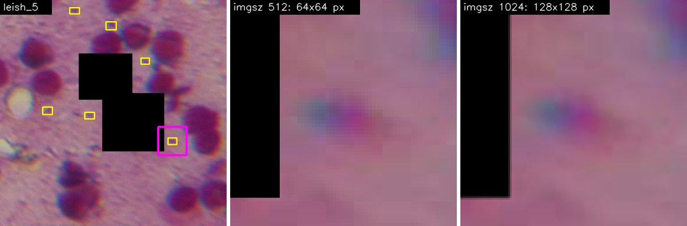

exp14 — YOLO11n com imgsz 1024
Objetivo: repetir o exp08 (YOLO11n sobre os recortes com o macrófago mascarado; mAP50 0,485 ± 0,109) mudando um único fator: o tamanho de entrada: imgsz 1024, com os recortes de 512 ampliados 2× no treino, na validação e no teste.
Hipótese: As leishmanias têm cerca de 20×19 px (mediana) e o mAP50-95 é baixo (cerca de 0,19), sinal de caixas pouco precisas. Ampliar a entrada dá mais pixels por parasita. O exp02 testou só 640.
Por que partir do exp08: os exp08, exp09 e exp10 mostraram que o modelo não muda o resultado (0,485 a 0,493), e o YOLO11n treina cerca de 5× mais rápido que os modelos large.
| Notebook | exp14_yolo11n_imgsz1024.ipynb |
| Dataset | 02_datasets_derivados/03_recortes_512_sem_macrofago/ (gerado por 01_preprocessamento/03_mascarar_macrofago_nos_recortes.ipynb) |
| Modelo | yolo11n.pt (pré-treinado COCO, 2,6M parâmetros) |
| Hiperparâmetros | imgsz 1024, 150 épocas, patience 40, batch 16, AdamW, lr0 5e-4, lrf 0.01, cos_lr, single_cls, seed 42; aumento de dados hsv 0.03/0.9/0.6, degrees 15, flipud 0.5, mixup 0.1 (iguais ao exp08, exceto o fator testado) |
| Validação | os mesmos 6 folds por lâmina dos experimentos anteriores, com métricas no teste agregadas por fold e por lâmina |
| Status | concluído em 18 nov. 2026 |
Exemplos das imagens

Resultado
Conjunto de teste, média ± desvio padrão nos 6 folds, comparado com o exp08 (a base). Diferenças menores que 0,03 estão dentro do ruído.
| Métrica | exp14 | exp08 (base) | Δ |
|---|---|---|---|
| Precisão | 0,505 ± 0,128 | 0,508 ± 0,102 | −0,003 |
| Recall | 0,554 ± 0,084 | 0,547 ± 0,074 | +0,007 |
| mAP50 | 0,489 ± 0,134 | 0,485 ± 0,109 | +0,004 |
| mAP50-95 | 0,199 ± 0,052 | 0,184 ± 0,039 | +0,015 |
Conclusão
- mAP50 0,489 ± 0,134, +0,004 em relação ao exp08: dentro do ruído.
- O mAP50-95 foi o maior da série: 0,199, contra 0,184 do exp08 (+0,014), e foi melhor em 4 dos 6 folds. Isso combina com a hipótese de que a entrada maior deixa as caixas mais precisas, mas o ganho ainda é menor que o desvio (0,05).
- Melhorou a leish_5, a lâmina mais densa (+0,053), e piorou a leish_9 (−0,062) e a leish_3 (−0,109).
- Custo: cada época levou cerca de 4× mais tempo. Conclusão: vale manter como candidato se a precisão da caixa (mAP50-95) ou a contagem forem prioridade.
Por fold
| Fold | Lâminas de teste | Épocas (melhor) | P | R | mAP50 | mAP50-95 | Δ mAP50 vs exp08 |
|---|---|---|---|---|---|---|---|
| 1 | leish_3, leish_5 | 64/24 | 0,586 | 0,612 | 0,586 | 0,214 | +0,052 |
| 2 | leish_2, leish_7 | 117/77 | 0,586 | 0,629 | 0,593 | 0,242 | +0,019 |
| 3 | leish_1, leish_8 | 96/56 | 0,401 | 0,418 | 0,340 | 0,140 | −0,014 |
| 4 | leish_4, leish_9 | 98/58 | 0,414 | 0,597 | 0,434 | 0,185 | −0,042 |
| 5 | leish_1, leish_7 | 83/43 | 0,678 | 0,588 | 0,640 | 0,266 | +0,028 |
| 6 | leish_2, leish_8 | 114/74 | 0,367 | 0,483 | 0,343 | 0,143 | −0,017 |
mAP50 por lâmina
| Lâmina | Folds | exp08 | exp14 | Δ |
|---|---|---|---|---|
| leish_1 | 3, 5 | 0,525 | 0,535 | +0,010 |
| leish_2 | 2, 6 | 0,399 | 0,349 | −0,050 |
| leish_3 | 1 | 0,359 | 0,250 | −0,109 |
| leish_4 | 4 | 0,184 | 0,171 | −0,013 |
| leish_5 | 1 | 0,536 | 0,589 | +0,053 |
| leish_7 | 2, 5 | 0,672 | 0,684 | +0,012 |
| leish_8 | 3, 6 | 0,359 | 0,346 | −0,013 |
| leish_9 | 4 | 0,590 | 0,528 | −0,062 |
Histórico
- 18 nov. 2026: criado a partir do plano de melhorias baseado nos exp01–exp10, e lançado na fila
executar_fila.sh(exp11 → exp12 → exp13 → exp14). - 18 nov. 2026: execução concluída nos 6 folds; resultados registrados.